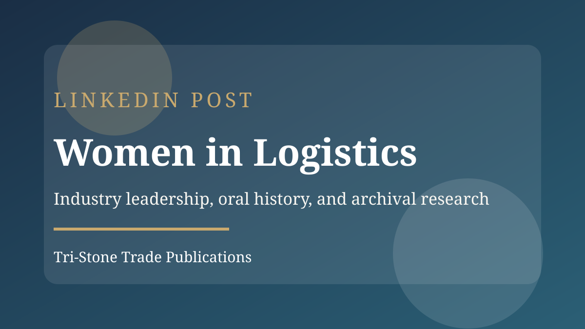
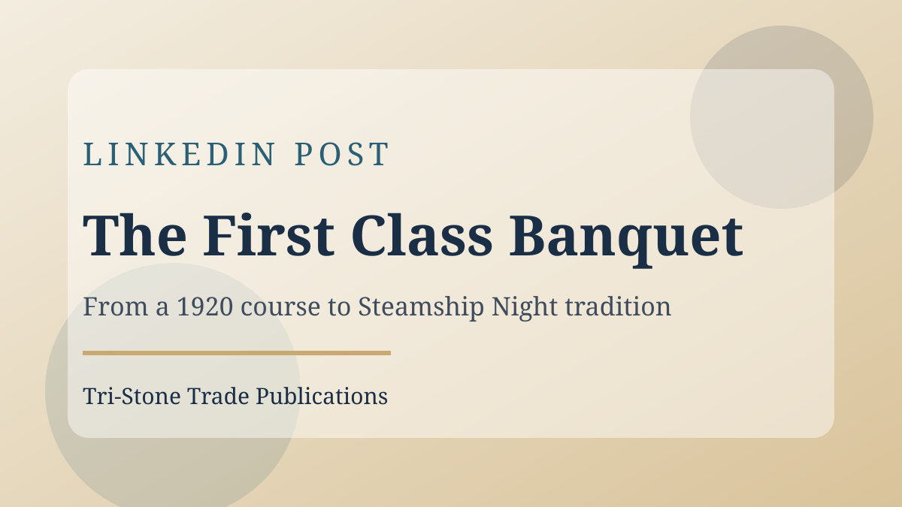

LinkedIn Posts

Women in LogisticsWomen in Logistics
Inspired by the Pacific Merchant Shipping Association's video series for the International Day for Women in Maritime (May 18), I’m starting with a chapter on Women In Logistics Norcal (WIL). Personally, I’ve found WIL’s industry programs valuable for insights ranging from leadership perspective panels to Port of Oakland infrastructure updates at the State of the Port luncheon. Special thanks to WIL founder Stacy Roth for taking the time to share your stories over lunch and for generously loaning a large box of source documents that helped shape this chapter. As this project continues, I welcome all of your feedback, stories, and photos to help refine this work as it develops into the final book.
View on LinkedIn
The First Class BanquetThe First Class Banquet
As graduation season unfolds, from California State University Maritime Academy earlier this month to University of California, Berkeley, Haas School of Business MBA commencement this weekend, it's a fitting moment to revisit the academic origins of the Pacific Transportation Association. In 1920, a University of California Extension course in Transportation in San Francisco brought together working professionals to study the increasingly complex rules of American commerce. What began as professional instruction quickly became a community. Students stayed after class, formed an association, and ended the inaugural course with a celebratory banquet. That gathering would evolve into what the industry has come to know as “Steamship Night.” Special thanks to the Bancroft Library for providing the archival materials that informed this history.
View on LinkedIn